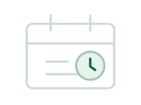

Preventive maintenance control
Schedule → job → checklist → outcomeSchedule check log
Maintenance schedules
record: office, assets, category, checklist, frequency, due date, technician| Schedule | Office / assets | Frequency | Next due | Technician | State | Manage |
|---|
also runs automatically every few seconds
Maintenance jobs
--| Job | Schedule / office | Status | Checklist |
|---|

No jobs -- they appear when a schedule falls due.Job already exists? The system checks the schedule occurrence first and reuses the existing job -- duplicate maintenance jobs are never generated.